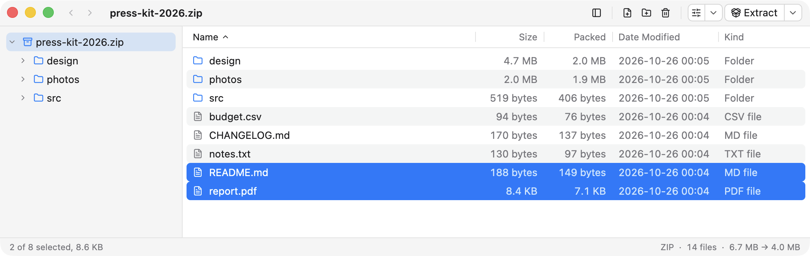
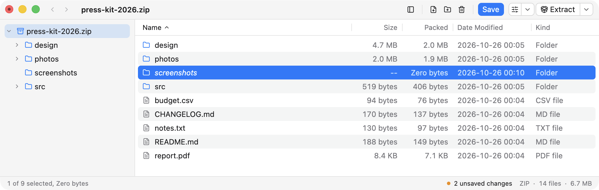

An archive manager for macOS
ZIP, RAR, TAR, TAR.GZ and GZIP — open, extract, edit.

- Fast, reliable and careful with your files.
- 100 000 files is not a problem. A 300 GB archive is easy.
- No extra features — only what you actually need.
Editing
Add, rename, move and delete inside an archive as if it were a folder. Unsaved entries stay in italics and the status bar counts them, until ⌘S rewrites the archive in one pass.

Formats
ZIP
read and write, AES-256
RAR
read and extract; editing needs the rar tool
TAR
read and write
TAR.GZ
read and write
GZIP
read and write, single file
Encrypted ZIP and RAR archives open with a password. Names stored in a legacy encoding can be re-read as cp866, cp1251, Shift_JIS and others.
Download
Version 2026.10 · DMG · macOS 13.0 or later · Apple Silicon only. The build is signed ad-hoc, so macOS asks for confirmation on first launch.